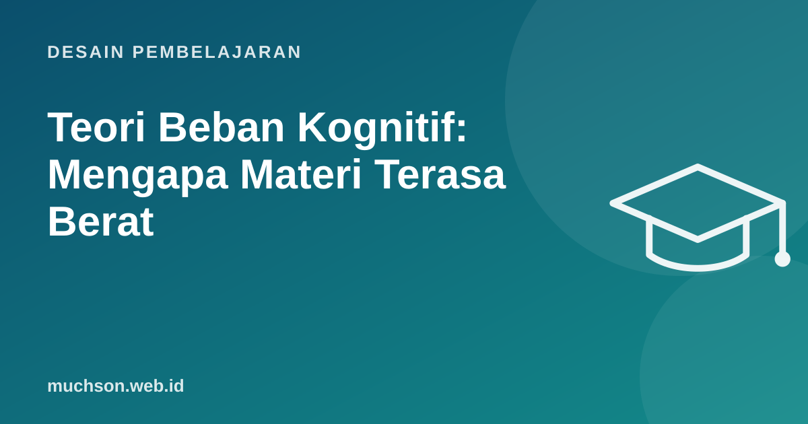

Beranda › Artikel › Desain Pembelajaran
Desain PembelajaranTeori Beban Kognitif: Mengapa Materi Terasa Berat
Pernahkah peserta terlihat mengangguk saat penjelasan, lalu bingung total saat latihan? Sering kali masalahnya bukan kecerdasan, melainkan kapasitas. Teori beban kognitif, dikembangkan John Sweller sejak akhir 1980-an, menjelaskan bahwa memori kerja manusia sangat terbatas, dan desain materi bisa membantu atau justru menghabiskan kapasitas itu.

Memori kerja: meja kecil, gudang besar
Bayangkan memori kerja sebagai meja kecil tempat Anda mengolah informasi baru: hanya muat beberapa hal sekaligus. Memori jangka panjang adalah gudang besar berisi pengetahuan yang sudah tersusun (skema). Bagi pemula, semuanya harus diletakkan di meja. Bagi ahli, banyak hal sudah tersimpan rapi di gudang sehingga meja tetap lega.
Tiga jenis beban
Efek-efek yang terbukti dan penerapannya
| Efek | Temuan | Penerapan |
|---|---|---|
| Worked example | Pemula belajar lebih baik dari mempelajari contoh terselesaikan daripada langsung memecahkan soal. | Tunjukkan 1-2 contoh lengkap dengan langkah, baru latihan. |
| Completion problem | Contoh yang sebagian dikosongkan menjembatani contoh dan latihan mandiri. | Kode dengan beberapa baris kosong untuk diisi. |
| Split-attention | Memisahkan gambar dan penjelasannya memaksa pembaca menyatukan sendiri. | Letakkan label langsung di diagram, bukan di legenda terpisah. |
| Redundancy | Informasi sama dalam dua bentuk sekaligus bisa membebani. | Jangan membacakan teks slide kata demi kata. |
| Expertise reversal | Bantuan yang menolong pemula bisa mengganggu peserta mahir. | Kurangi bimbingan bertahap (fading) seiring kemampuan naik. |
Fading: dari contoh ke mandiri
Tanya jawab
Berapa banyak hal yang bisa ditampung memori kerja?
Angka terkenal "7 ± 2" dari Miller (1956) kini dianggap terlalu tinggi untuk informasi yang benar-benar baru; banyak peneliti seperti Cowan memperkirakan sekitar 3-5 unit bermakna.
Apakah materi harus selalu dibuat mudah?
Tidak. Materi yang menantang tetap perlu; yang dikurangi adalah kerumitan yang tidak perlu dari cara penyajian.
Apakah teori ini berlaku untuk orang dewasa?
Ya. Prinsipnya berlaku untuk siapa pun yang mempelajari hal baru, termasuk karyawan senior yang belajar sistem baru.
Sumber dan bacaan lanjut
- Sweller (1988): Cognitive load during problem solving, Cognitive Science
- Sweller, van Merriënboer, Paas (2019): Cognitive Architecture and Instructional Design, 20 Years Later
- Cowan (2001): The magical number 4 in short-term memory